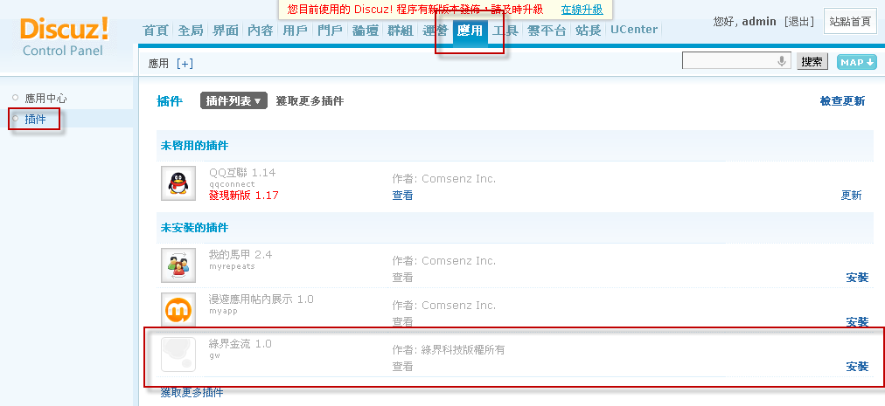
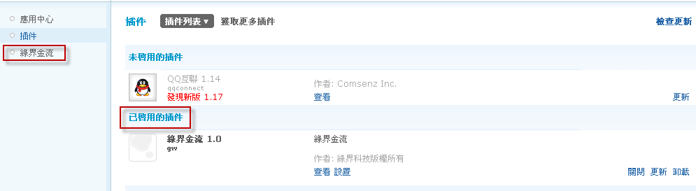
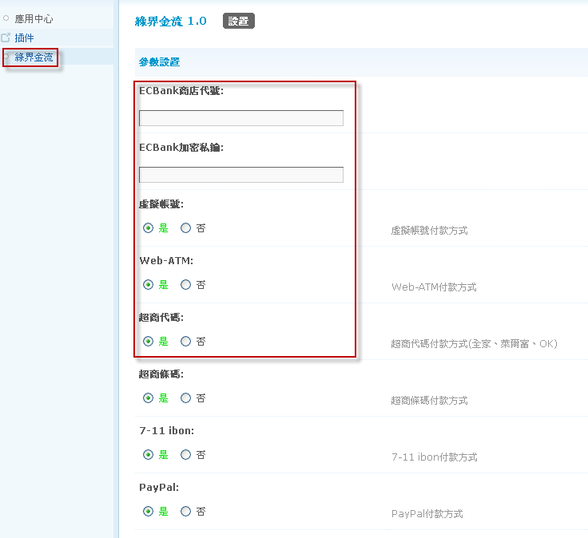
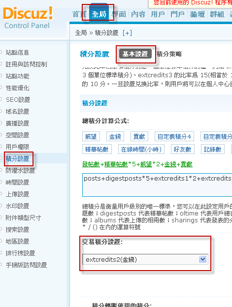
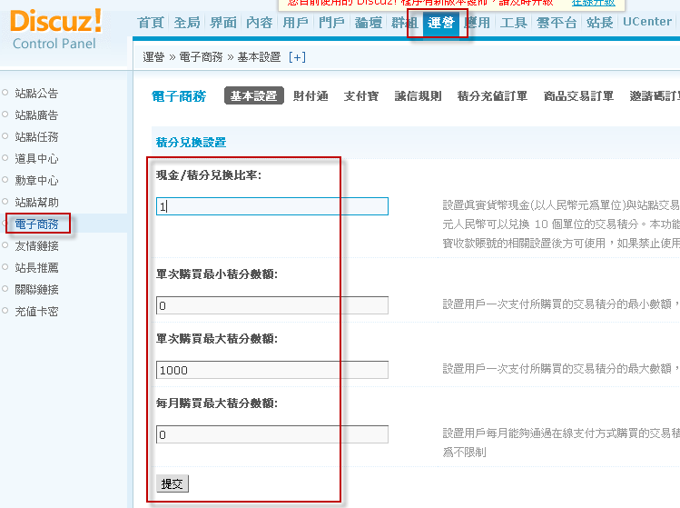
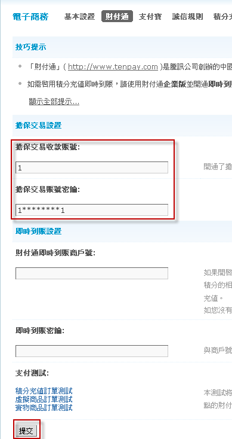

Step 1 - 插件安裝說明
說明：此版本的金流插件包含了以下各項付款方式
虛擬帳號、WEB-ATM、超商代碼、超商條碼、7-11 ibon、PayPal、綠界支付寶、綠界財付通、ECPay信用卡不分期、ECPay信用卡分期、AllPay信用卡不分期
請先安裝好Discuz論壇，注意：目前接受的版本至少要Discuz! X2.5 Release 20120901(含)以上，若版本不符將會在充值時發生錯誤
經測試過本模組可支援Discuz! X3.0與X3.1，若系統升版時有無法使用之情況，請將模組移除重新安裝後再試試看。
注意：以下每個步驟皆是必需執行的，請不要忽略某一步驟，以免無法使用，謝謝。
1 解壓檔案後，此時您可看見4個資料夾
2 將這4個資料夾利用ftp上傳至您所安裝的discuz主機上，並且覆蓋
3 使用管理者帳號登入至管理中心，選擇『應用』>『插件』後，此時在未安裝插件中，將出現綠界金流1.0的插件，再選擇『安裝』

4 按下右邊的安裝，成功後即會出現如下圖所示

5 啟用綠界金流插件，按下右邊『啟用』，啟用後，會如下圖示，左側選單多一個綠界金流的插件

6 按下左側選單『綠界金流』，設定綠界金流的資料，依照右側說明輸入資料，並選擇您所要充值的收款方式後，按下提交

7 請至『全局』>『積分設置』設定您論壇的交易積分方式，在這以金錢為例

8 請至『運營』>『電子商務』>『基本設置』設定您論壇的積分兌換方式

9 開啟充值功能，請至『基本設置』的左側『財付通』，在財付通設置中的賬號與密鑰，請隨便輸入後，按下提交
